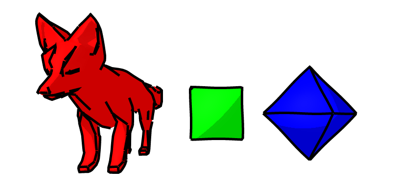
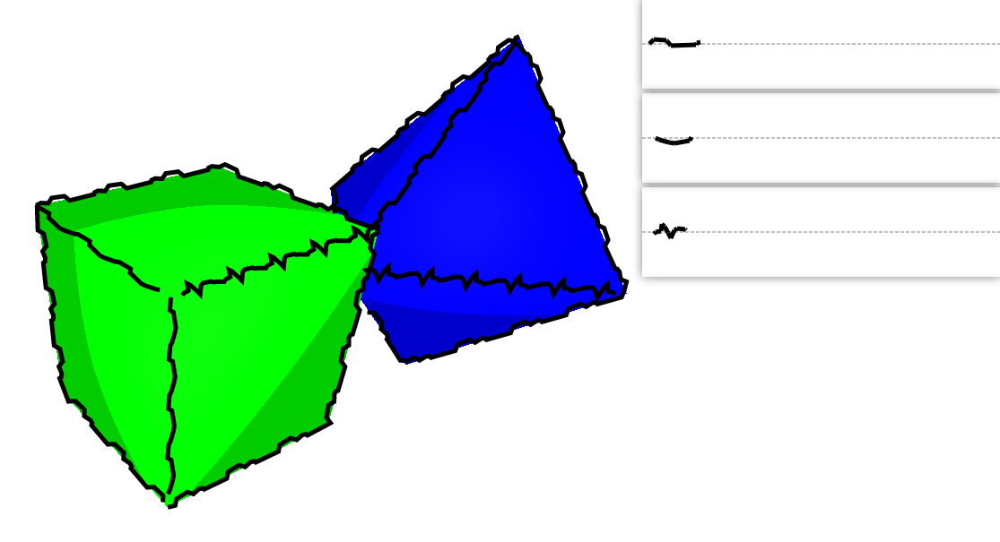
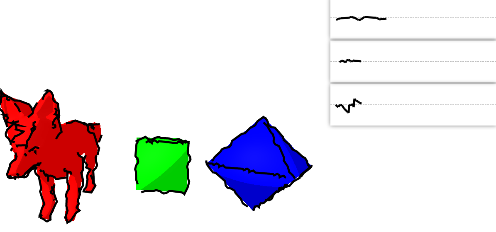
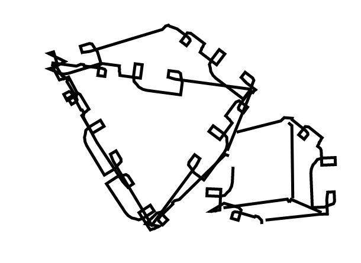

Non-photorealistic rendering is a medium that focuses on giving artists a flexible architecture for creating digital art. Inspired by a previous NPR project that focused on cross-hatch shading, we wanted to provide a counterpart that focused specifically on stylized contours. Our project focuses on identifying the crease (i.e. facial contours) and silhouette (i.e. outline) edges of a 3D mesh, and projecting 2D user-input strokes onto these shapes to augment the hand-drawn characteristics of a NPR-style render. This results in the creation of bold outlines and highlighted features that an artist might draw with pen-and-paper. Additionally, we provide functionality to synthesize new strokes, based on user-input strokes through the use of Markov Random Fields.
To implement our project, we used javascript in concert with available libraries, including threejs and seedrandom. ThreeJS provides resources to import and interpret 3D collada objects. Once processed and imported, our algorithm constructs a half-edge mesh representation of the object for traversal. Using this, we traverse the edges and detect important edges, which are either silhouettes or creases. Silhouettes are edges that have one of its connected faces towards the camera, while the other is facing away. Creases are edges that have both connected faces visible to the camera, but its angle is greater than a defined threshold. Problems that were faced when implementing this included that we needed to get a list of edges with easy access to adjacent triangles. Our solution was to implement the half-edge structure, which ThreeJS does not automatically generate, and convert the imported geometry to that structure representation before any further processing. We also forgot that we needed to perform a special transformation for the normal vectors, used for the detection of important edges. In general, the required matrix transformations were tricky and difficult to debug. Once these important edges have been identified, we perform an approach that is unique to our references’ approaches. We construct a graph of the vertices with edges where the important edges are. Then we perform multiple depth first searches to heuristically find long continuous strokes to render until there are no unused edges. This allows us to emulate the characteristics of hand-drawn contours, and to stylize the strokes in a consistent manner. Once the graph paths have been found and created, we project these paths onto the 2D camera plane. This is done by taking the 3D points of the paths, which are all vertex positions, and convert them into screen space using our camera’s projection matrix. At this point, the user-input strokes can now modify the paths. Such input strokes are represented as a list of stroke points that consist of pairs of x-positions and offsets from a predetermined ‘base path’ (the dashed line). This representation was based on the approach described in Kalnins et al. [2002]. For each 2D projected path, our defined function maps these stroke points to its corresponding position along the path’s ‘waypoints’, by mapping the stroke point’s x-index to a point along the waypoints and the stroke point’s ‘offset’ to the distance from the normal of the path along the waypoints. During implementation, we decided allow for repetition of strokes, as the input strokes could be shorter than the total length of any of the paths, and also to allow for back-tracing for more complex strokes including loops. Thus, a lot of special care had to be taken during coding. At this point all user-input strokes have stylized the 2D paths. However, rendering now could result in the overlapping of edges and faces by different objects or because of complex geometry. These overlapped edges should instead be occluded via a visibility test. There are several ways to do this, one is to just render in 3D with adjustments due to scaling. This, however, caused problems with clipping. Instead, we render off-screen to a 2D canvas on top of the 3D camera’s render and check each vertex to determine which parts of the stylized paths are visible. As a consequence, the visibility is a bit imperfect, as it is at a per-vertex scale, but it better emulates the hand-drawn style and adds to the realism! The GUI provides a playground for the user to test user-input strokes for three different objects. By default, the strokes default to a wavy stroke, generated through sine waves, but upon input the user’s strokes will be randomly assigned to different silhouettes and creases on the objects. ‘s’ will shuffle the assignment of strokes by changing the random seed, ‘r’ allows the user to reset the canvas, and ‘m’ will synthesize new strokes based on the user’s example strokes. Implementing visual functions that integrate with event handlers was difficult to debug, and required a lengthy effort of running the console to check variables as well as the debugger to check position values relating the the different windows and events. Given user input strokes, our project also has the ability to synthesize new strokes via a Markov Random Field. Our implementation follows the approach described in Kalnins et al. [2002]. We concatenate all user-input strokes into a single array, including special values that denote separators between the different example strokes. This stroke array is full of the offsets that have been seen, and this set of offsets forms our statespace: we only synthesize offsets that have been drawn, and the synthesis aspect is in the choice of how to order these offsets. A distance function D that measures the distance between any two states is saved as an array. A diagonal kernel is applied to the matrix D, resulting in the matrix D’, which represents the “difference between two windows of offsets”, the windows being the ranges of (i-k) and (j-k), where k = {0, …, m} and (i, j) is an entry in the D matrix. This, as described in Sch ̈odl et al. [2000], is employed to help smooth the transitions between offsets and provides influence from surrounding offsets. With this new distance function in place, we can view the problem as one of reinforcement learning: the action space consists of choosing the next state. Therefore, the transition function T(s, a) = a. In the reinforcement learning framework, we can view the sum of future cost of taking an action a from a state s as Q(s, a). We can solve for the Q(s, a) function using Q learning! After that is solved, we have a new metric, which tells us the total cost of taking an action from any state. Next, we can use softmax to make this a probability distribution, from which we can sample. Therefore, we have a method to sample the next offset from the current offset, and we can chain these together to form arrays of generated offsets.
When we started the project, we set out some goals for what we had hoped to accomplish. We were pretty successful! We created a user-interactive web GUI, applied strokes onto simple 3D models, and applied strokes onto medium-sized 3D models. Our stretch goal was to implement Markov Random Field based synthesis, and while we did implement it, there are some issues that we faced that we could not fix in time. With what we have, we can realistically render meshes as if they were hand-drawn, and users can easily customize the look of the meshes using a stroke editor.
|  |  |
|  |  |